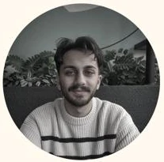

2023 — Devam ediyor
Mimar Sinan Güzel Sanatlar Üniversitesi
Mimarlık Bölümü / 4. sınıf
Mimari tasarım, mimari çizim ve üç boyutlu modelleme üzerine eğitim.
PROFİL / ÖZGEÇMİŞ
Mimarlık öğrencisi.
Tasarım, yayıncılık ve birlikte üretim.
İstanbul, Türkiye

Mimar Sinan Güzel Sanatlar Üniversitesi Mimarlık Bölümü 4. sınıf öğrencisiyim. Mimari tasarım pratiğimi, grafik üretim ve yayıncılık deneyimleriyle birlikte geliştiriyorum.
Tasarlamaya ve üretmeye duyduğum ilgi beni mimarlığa yönlendirdi. Eğitimim boyunca kentsel yerleşimden yapı detayına uzanan projeler üzerinde çalıştım. Perşembe Pazarı meydan ve çarşı kompleksi, Fatih öğrenci yurdu ve Kuzguncuk kitap kafe uygulama projesi bu portfolyodaki çalışmalarımı oluşturuyor.
Staj ve freelance çalışmalarımın yanında, NOCTUART Dergi'de kurucu ortaklık ve SofArt Atölye & Dergi'de etkinlik yönetimi ve temsilcilik görevleri üstlendim. Grafik tasarım ve editörlük deneyimlerim; çizim, görsel anlatım ve yayın tasarımıyla kurduğum ilişkiyi besliyor.
MSGSÜ Mimarlık Kulübü'ndeki yönetim kurulu üyeliğim ve 2025–2026 dönemindeki başkanlığım, ekip çalışmasının önemli bir parçasını oluşturuyor. Mezuniyet sonrasında mimari tasarım ile proje yönetimini birlikte yürüten bir mimar olmayı hedefliyorum.
2023 — Devam ediyor
Mimarlık Bölümü / 4. sınıf
Mimari tasarım, mimari çizim ve üç boyutlu modelleme üzerine eğitim.
Mayıs 2024 — Haziran 2026
Kurucu ortak
Dergi tasarımı, illüstrasyon, görsel düzenleme ve ekip yönetimiyle birleşen yayıncılık deneyimi.
Temmuz — Kasım 2024
Etkinlik yönetimi · Uzaktan
İletişim ve görsel üretim becerileriyle desteklenen etkinlik yönetimi deneyimi.
Haziran — Ağustos 2025
Stajyer mimar · Beykoz, İstanbul · Hibrit
Mimarlık ofisi stajı. Revit, Coohom, Veras ve Adobe Creative Suite ile ilişkili çalışmalar.
Nisan — Mayıs 2026
Stajyer / Gönüllü çalışma
Nisan 2024 — Devam ediyor
Yönetim kurulu üyesi
Eylül 2025 — Ekim 2026
Başkan
Mimarlık, kültür ve sanat odağındaki öğrenci topluluğunda başkanlık görevi.
Nisan 2024 — Ekim 2026
Temsilci
Kültür ve sanat alanında temsilcilik; iletişim ve ekip çalışması.
Haziran 2025
Udemy
Revit, BIM ve üç boyutlu modelleme.
Aralık 2023
Udemy / Bitirme sertifikası
Mimari çizim ve tasarım.
Çizimler, fikirler ve süreçler.
Seçili çalışmaları incele ↗